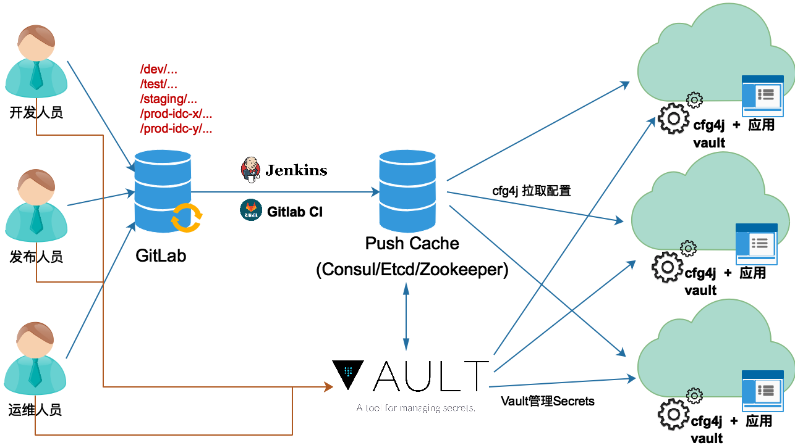

配置管理
配置管理(如数据库访问凭据，服务网络地址等）问题在Monolith应用中相对比较简单，通常通过配置文件就可以解决。但是，随着系统的规模越来越庞大，应用不断拆分并趋向分布式部署，服务节点开始以集群化规模存在，特别是当业务迁移到微服务架构时，服务节点数成百上千，配置管理问题就变得非常突出。在趋向分散的节点中维护大量配置文件是一项复杂的工程，很容易出错。同时，如果配置文件中保存着某些敏感信息如数据库访问密码，当这些安全数据需要跨节点存在时也会大大降低系统的安全性。
因此，在微服务架构中，配置管理需要解决服务配置的分散，动态，环境切换，安全和版本跟踪、回滚等问题。下图是采用Git仓库存储配置并采用PULL拉取策略实现的配置管理方案。

如上图所示，通过Git仓库的版本管理及分支特性，可以满足配置的环境切换（开发、测试、集成、生产环境等），版本跟踪与回滚的需求。采用拉取策略，由应用根据自身配置需求及运行态势决定配置的处理方式。通过推送缓存（可选），可以穿透复杂的网络隔离，提升配置拉取的速度。通过Secrets管理服务，服务仅在使用时才能解密敏感的数据，大大提高了服务的安全性。
- 配置存储
通过Git仓库存储配置文件，可以通过仓库或仓库分支管理不同环境的配置。Git仓库配置跟踪的特性可以很容易的实现配置的跟踪和回滚。
使用Git客户端工具可以很容易的对配置文件进行管理维护。配置文件可以是YAML，JSON，Java Properties文件，XML等，通常使用YAML或Java Properties文件。
通过Git工作流可以将配置的管理与内部开发流程紧密结合起来。
- 推送缓存
推送缓存作为中间缓冲，既可以加快应用获取配置的速度，又可以避免破坏生产网络与内部开发网络的安全隔离。
- 持续部署
持续部署管道可以将配置变更直接推送到缓存，同时还可以对配置进行合法性校验。
- Secrets管理
Secrets管理服务存储的信息都是加密后的，敏感信息仅在服务节点使用时调用该服务解密获取，避免明文信息在节点中扩散，确保信息的安全。
- 配置应用
通过配置库工具包从缓存拉取配置，应用可以在避免代码重新部署的情况下自动加载新的配置；通过Secrets管理服务动态获取敏感数据可以加强安全数据的隔离。